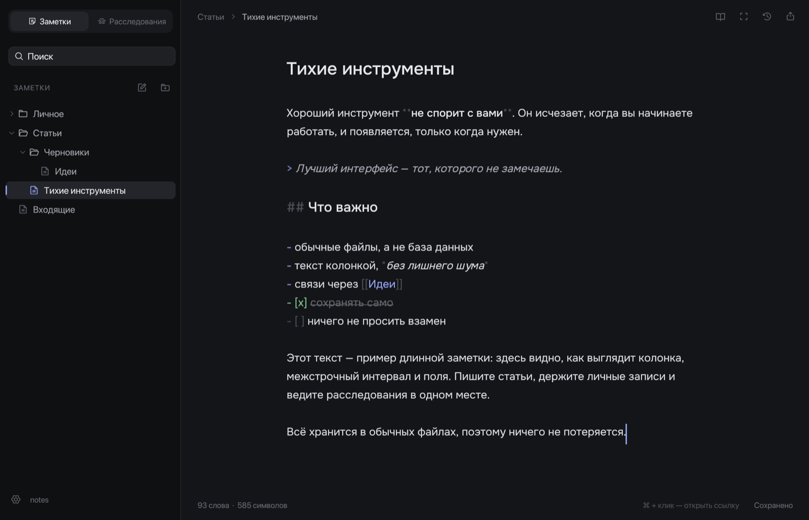
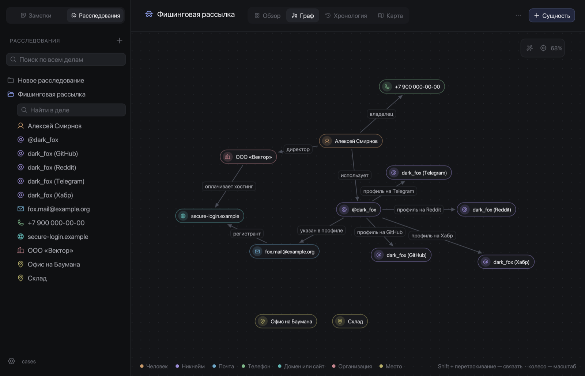
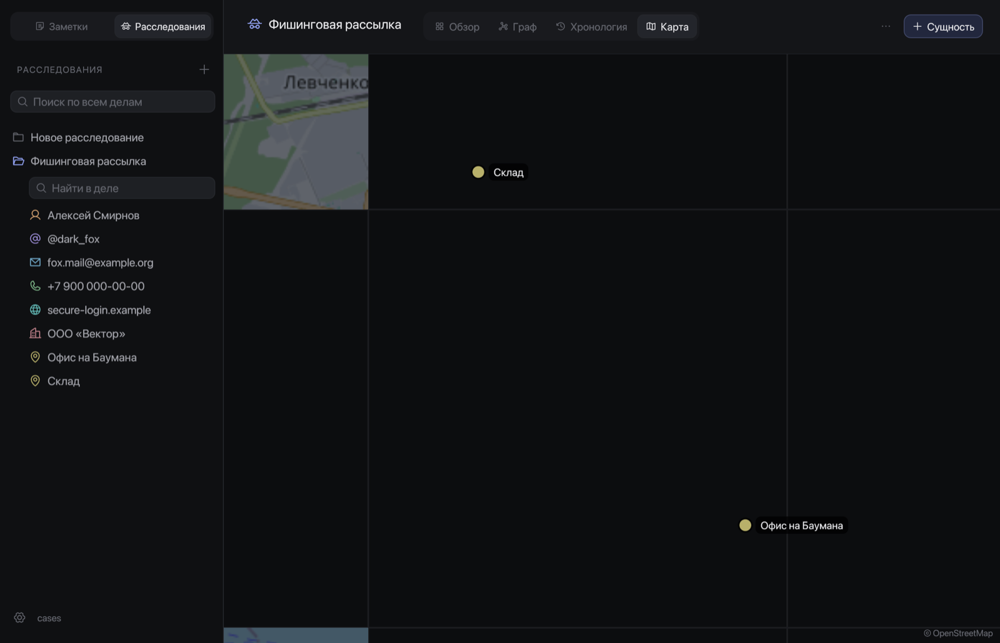

Тихое место для мыслей
Каждая заметка — обычный файл .md на вашем диске. Его можно открыть чем угодно, скопировать на флешку, удалить без следа.

- Ссылки между мыслями
[[имя]]связывает заметки. ⌘ + клик открывает, внизу видно, кто ссылается сюда.- Найти за секунду
- ⌘P — пара букв названия, и заметка открыта. Поиск идёт и по тексту.
- Режим фокуса
- ⇧⌘F — панели исчезают, всё, кроме текущего абзаца, уходит в тень.
- Режим чтения
- ⌘E — разметка прячется, картинки показываются, текст читается как страница.
- Теги
#тегв тексте собирается в боковой панели. Один клик — и остаются только нужные заметки.- История версий
- Копии сохраняются сами. Любую можно посмотреть и вернуть.
- Картинки
- Перетащите картинку в окно — она ляжет рядом с заметкой.
- PDF и HTML
- Экспорт тем же шрифтом, каким вы писали.
Расследования
Отдельный раздел для OSINT-работы. Каждое дело — папка: люди, никнеймы, адреса и домены как карточки, а между ними — нити.
- человек
- никнейм
- почта
- телефон
- домен
- организация
- место
Каждой связи — источник. Каждому источнику — дата и оценка надёжности. Доказательства лежат рядом, в папке дела.
- Заведите дело и добавьте первую сущность.
- Нажмите «Проверить автоматически» — приложение пройдёт по открытым источникам.
- Добавьте находки: найденные профили сразу встанут на граф.
- Соберите отчёт в PDF, когда картина сложится.
Автопроверка
Одна кнопка в карточке. Никнейм проверяется на шестнадцати сайтах, почта — в Gravatar, домен — в DNS, WHOIS, сертификатах и веб-архиве. Находки появляются по мере ответа.

Всё остальное — под рукой
- Шифрование паролем
- Карточки, заметки и улики дела шифруются. Даже имена людей на диске скрыты. Пароль не восстановить — его знаете только вы.
- Сущности из текста
- Вставьте переписку или страницу — почты, телефоны, домены, IP, никнеймы и кошельки найдутся сами.
- Карта
- Места с координатами — точки на карте. Координаты находятся по адресу прямо в карточке.
- Копия страницы
- Источник-ссылку можно сохранить в дело файлом с датой. Улика не пропадёт, если страницу удалят.
- Поиск по всем делам
- Встречался ли этот никнейм раньше — видно сразу, по всем расследованиям.
- Отчёт
- Сущности, связи, источники и хронология одним документом в PDF или Markdown.

Мы не видим ваши заметки.Потому что их у нас нет. Нет сервера, аккаунта и синхронизации. Только папка на вашем диске — а дело можно ещё и запереть паролем.
В интернет приложение выходит только по вашему действию: карта, поиск адреса, копия страницы и автопроверка. Запросы идут прямо с вашего компьютера.
Скачать
macOS
Apple Silicon. Приложение не подписано: при первом запуске нажмите на нём правой кнопкой и выберите «Открыть».
Скачать для macOSWindows
64-бит. Распакуйте архив и запустите Quiet Note.exe. Если SmartScreen предупредит, нажмите «Подробнее», затем «Выполнить в любом случае».
Скачать для WindowsLinux
x86_64. Распакуйте архив и запустите quiet-note. Нужны GTK 3 и OpenGL.
Скачать для Linux